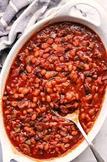

Bean Recipe

Description
This bean recipe is a delicious and healthy dish that can be enjoyed as a side or as a main course. Made with a variety of beans and a flavorful tomato-based sauce, it's packed with protein, fiber, and nutrients that will keep you feeling full and satisfied. It's also vegan-friendly and gluten-free, making it a versatile dish that everyone can enjoy.
Ingredients
- 1 can (15 oz) black beans, drained and rinsed
- 1 can (15 oz) kidney beans, drained and rinsed
- 1 can (15 oz) garbanzo beans (chickpeas), drained and rinsed
- 1 can (15 oz) diced tomatoes, undrained
- 1 onion, chopped
- 2 cloves garlic, minced
- 1 tablespoon olive oil
- 1 teaspoon ground cumin
- 1/2 teaspoon smoked paprika
- 1/2 teaspoon chili powder
- Salt and pepper, to taste
- Fresh cilantro or parsley, chopped, for garnish (optional)
Directions / Steps
- Heat the olive oil in a large skillet over medium heat. Add the chopped onion and minced garlic, and cook until the onion is translucent and the garlic is fragrant, about 3-5 minutes.
- Add the ground cumin, smoked paprika, chili powder, salt, and pepper to the skillet, and stir to combine.
- Add the diced tomatoes to the skillet, and stir to combine with the onion and garlic mixture. Let the mixture simmer for 5-10 minutes until it has thickened slightly.
- Add the drained and rinsed black beans, kidney beans, and garbanzo beans to the skillet, and stir to combine with the tomato mixture.
- Cover the skillet with a lid, and let the bean mixture simmer for 10-15 minutes until heated through.
- Remove the lid from the skillet, and let the bean mixture cook for another 5-10 minutes until the sauce has thickened and the beans are tender.
- Serve the bean mixture hot, garnished with chopped cilantro or parsley if desired.